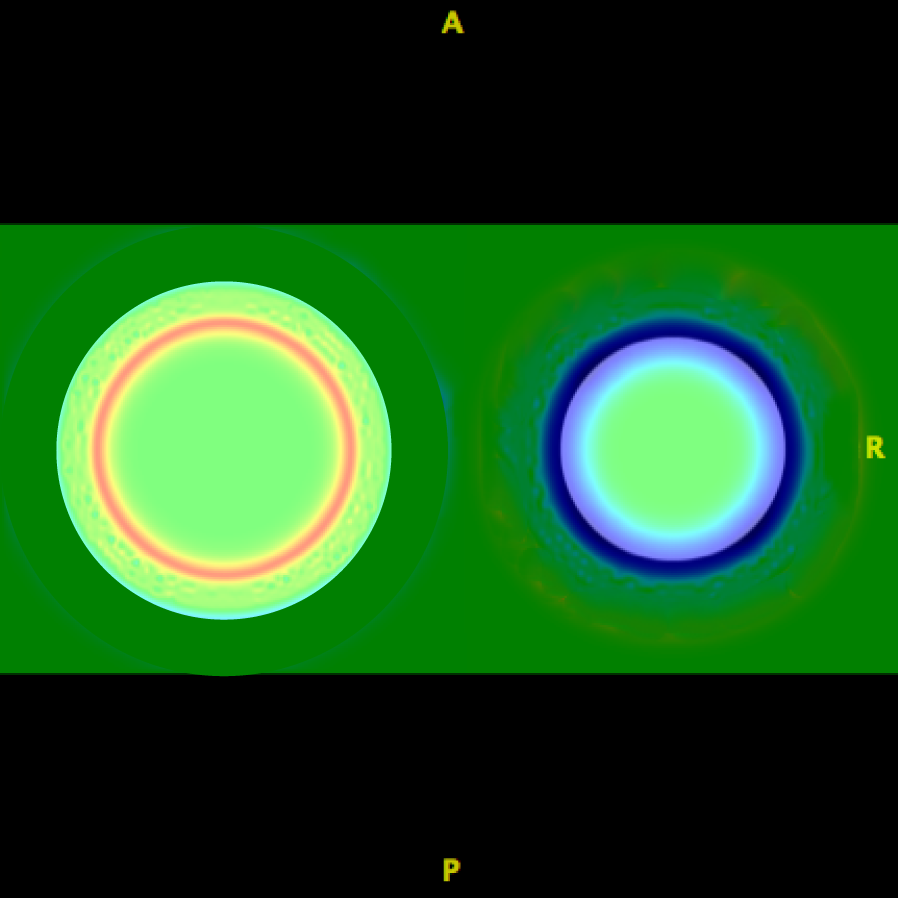
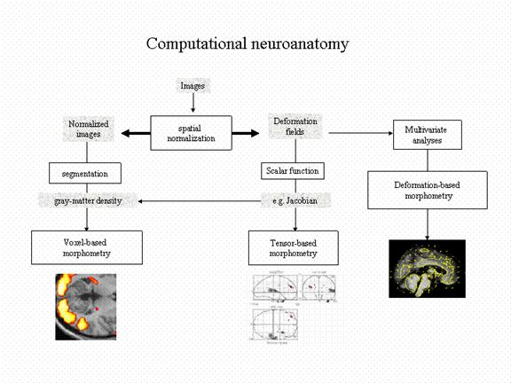
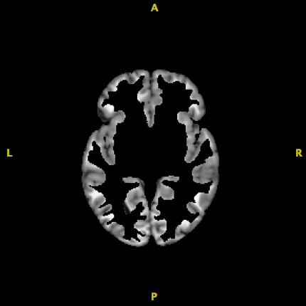
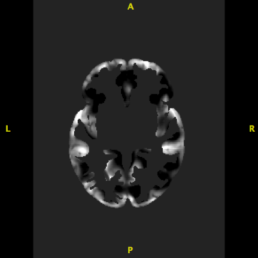

Types of Morphometry Analyses
Objectives
After you complete this section, you should be able to:
- Describe tensor based morphometry
- Know what image is used in TBM
- Describe voxel based morphometry
- Know how to generate the image used in VBM
Note that everything in “< >” is to be replaced. For example, <fileName> –> iLovePeanuts.txt
Tensor Based Morphometry
Tensor based morphometry measures the differences in shape of brain structures. Analyses are useful in studies interested in whether growth or volume loss has occurred. This analysis is also useful in detecting small changes in longitudinal studies.
The warp field only represents positions of brain structures and not local shape information. Instead, the Jacobian determinant contains information about the local stretching, shearing and rotation involved in the deformation.
Fixed Image


Taking the log of the Jacobian makes it symmetric about zero. Positive values indicate tissue enlargement, whereas negative values indicate tissue reduction in the participant as compared to the template.
Group Analysis
In order to complete group analyses, all images have to be template space so you know you are comparing apples to apples. For group analyses, images cannot be in native, participant space.
The log Jacobian image is used for analyses. Running antsCorticalThickness pipeline will automatically generate the log Jacobian (i.e., SubjectToTemplateLogJacobian.nii.gz).
Voxel Based Morphometry
Voxel Based Morphometry measures structural differences in tissue classes (e.g., gray matter atrophy). Analyses are useful in studies interested in tissue specific volumetric differences.
The normalized images are adjusted by scaling the intensity of each voxel by the log jacobian. In other words the volume changes due to the non-linear spatial normalization are used to modulate the normalized image. Otherwise your analysis will give you null results because all the images look exactly alike (that’s the point of normalizing to a template).

Group Analysis
The modulated normalized gray matter image is used for analyses. This image has to be self generated.
Modulate Gray Matter Image
First, you will take the template GM ROI and multiply it with the normalization whole brain image. Remember the value inside the ROI is 1 and the value outside the ROI is 0. When you multiply anything by 0 it equals 0, so when you multiply these two images together, you are left with just normalized gray matter.
SUBJ_DIR=~/path/to/subject/directory
TEMPLATE_DIR=~/path/to/template/directory/
c3d \
${SUBJ_DIR}/corticalthickness/BrainNormalizedToTemplate.nii.gz \
${TEMPLATE_DIR}/T_template0_gm.nii.gz \
-multiply \
-o ${SUBJ_DIR}/corticalthickness/GMSegmented.nii.gz
The image has been normalized to a template, so at this point the image should be nearly indistinguishable from the template. Any comparison will result in null results. However, if you multiply the image by the log Jacobian, then you are adjusting the intensity of each gray matter voxel by the amount of stretching, shearing, and rotation that occurred.
c3d \
${SUBJ_DIR}/corticalthickness/GMSegmented.nii.gz \
${SUBJ_DIR}/corticalthickness/SubjectToTemplateLogJacobian.nii.gz \
-multiply \
-o ${SUBJ_DIR}/corticalthickness/GMModulated.nii.gz
Additional Classroom Materials
blog comments powered by Disqus